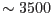

The task omdetect runs on the image with spectra aligned to the pixel columns of the image, i.e. the output of omgprep. It creates a list of detected sources, which becomes the input for the task omgrism.
Practically all the sources detected by omdetect in the grism images are classified as extended. However, zero-order spectra can be distinguished from the first-order spectra by their major semi-axes that are given for each source in the source list produced by omdetect. In the case of the UV grism, the first- and the second order spectra overlap and they are usually detected as a single source with a large major semi-axis (the flux-calibrated part of the output (UV) spectra are currently truncated at  Å due to the problem of separating the two orders and the parallel lack of adequate calibration).
There is also a possibility of spurious source detection due to the residual modulo-8 noise pattern. Omdetect incorporates a mechanism which attempts to discriminate (reject) spurious detections. However, this can cause non-detection of some spectra which are, nonetheless, detectable by visual inspection). The user can control the discrimination level through the parameter nsigma passsed by omgchain to omdetect (see Section 5). Further identification and cross-examination of the detected zero- and first-order spectra is left to the task omgrism (see the next section). An example of an image (visual-grism) with the sources detected by omdetect is shown in Fig.5.